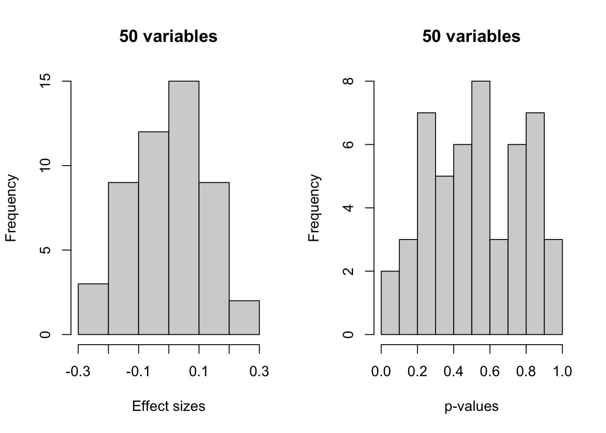
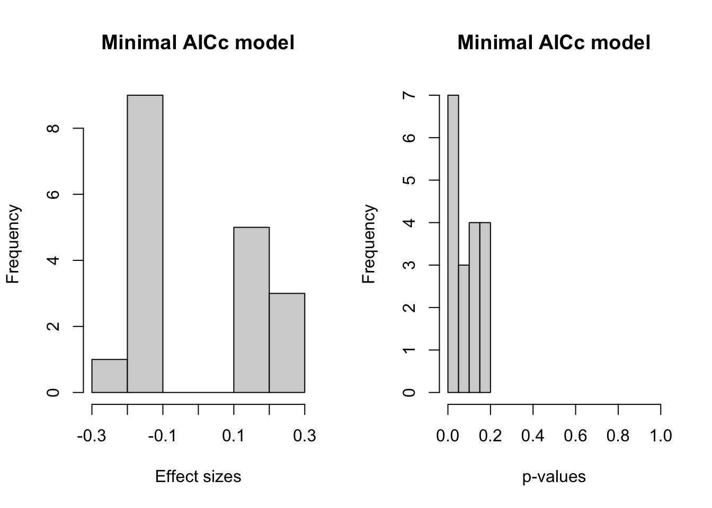

library(MASS)
set.seed(123456)Model selection bias example using automatic AIC minimization
The purpose of this document is to illustrate how model selection using AIC minimization can lead to model selection bias.
Load libraries
Generate a data set with 51 independent normally distributed variables (columns) for 100 observations (rows)
data <- data.frame(matrix(rnorm(51*100),ncol=51))Column 51 is thereby the response (that’s a random choice)
names(data)[51] <- "Y"Fit a regression of Y against all the 50 covariates and then look at how the p-values are distributed
r.lm <- lm(Y~.,data)As expected, the distribution of the p-values is (more or less) uniform between 0 and 1, none of them below 0.05:
par(mfrow=c(1,2))
hist(summary(r.lm)$coef[-1,1],freq=T,main="50 variables",xlab="Effect sizes")
hist(summary(r.lm)$coef[-1,4],freq=T,main="50 variables",xlab="p-values")
Then use AICc minimization to obtain the objectively “best” model:
r.AICmin <- stepAIC(r.lm, direction = c("both"), trace = FALSE,AICc=TRUE)
par(mfrow=c(1,2))
hist(summary(r.AICmin)$coef[-1,1],freq=T,main="Minimal AICc model",xlab="Effect sizes")
hist(summary(r.AICmin)$coef[-1,4],freq=T,main="Minimal AICc model",xlab="p-values",xlim=c(0,1))
The distribution of the p-values is now skewed: many of them reach rather small values (seven have \(p < 0.05\)). This happened although none of the variables has any explanatory power!